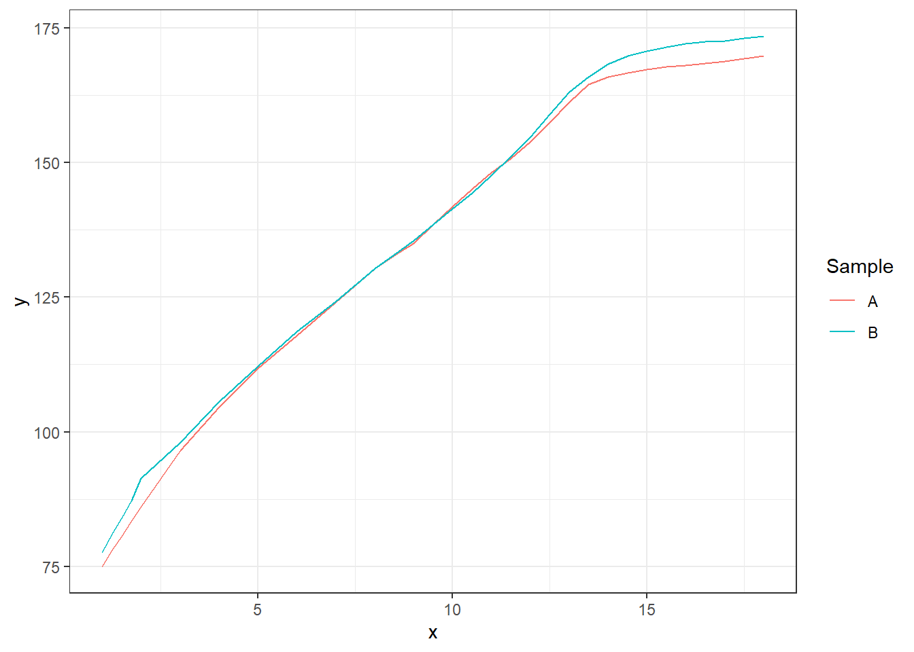

Kapitola 11 Aplikace na reálných datech 3
V této části se podíváme podrobněji na klasifikaci pomocí postupu, při kterém nejprve data projektujeme na Reproducing Kernel Hilbert Space definovaný jádrem \(K\) a následně pomocí koeficientů této projekce klasifikujeme data pomocí metody SVM. K získání koeficientů projekce se také využívá metoda SVM, avšak její analogie pro řešení regresních preblémů (SVM for regression). Tento postup je podrobněji popsán ve článku6, jehož autory jsou Muñoz a González.
Autoři ve svém článku popisují mimo jiné i chování koeficientů z vyjádření pomocí jádrových funkcí (kernel expansion) a zlepšení stability koeficientů pomocí RKHS. Tuto vlastnost si nyní ilustrujme na analogickém příkladě, jako uvádějí autoři.
Code
11.1 handwrit data
Nejprve si načteme data, která představují souřadnice ručně psaných slov fda. Pro naše účely, kdy chceme porovnat dvě různá pozorování, si načtěme pouze první dva záznamy.
Pro lepší orientaci si data nejprve vykresleme. Nejprve celkový záznam nápisu fda, následně jednotlivé souřadnice \(x\) a \(y\) proti času.
Code
p1 <- ggplot(data = data.frame(x = c(hand[, 1, 1], hand[, 2, 1]),
y = c(hand[, 1, 2], hand[, 2, 2]),
Sample = rep(c('A', 'B'), each = 1401)),
aes(x = x, y = y, colour = Sample)) +
geom_path() +
theme_bw() +
labs(x = 'X',
y = 'Y') +
theme(aspect.ratio = 1,
legend.position = 'none')
p2 <- ggplot(data = data.frame(x = c(handwritTime, handwritTime),
y = c(hand[, 1, 1], hand[, 2, 1]),
Sample = rep(c('A', 'B'), each = 1401)),
aes(x = x, y = y, colour = Sample)) +
geom_path() +
theme_bw() +
labs(x = 'Time',
y = 'X') +
theme(aspect.ratio = 1,
legend.position = 'none')
p3 <- ggplot(data = data.frame(x = c(handwritTime, handwritTime),
y = c(hand[, 1, 2], hand[, 2, 2]),
Sample = rep(c('A', 'B'), each = 1401)),
aes(x = x, y = y, colour = Sample)) +
geom_path() +
theme_bw() +
labs(x = 'Time',
y = 'Y') +
theme(aspect.ratio = 1,
legend.position = 'none')
(p1 | p2 | p3)
Nyní se podívejme, jak dopadnou vektory koeficientů \(\boldsymbol \alpha_1\), \(\boldsymbol \alpha_2\) z jádrového vyjádření získaného pomocí SVM pro regresi a také jak vypadají \(\boldsymbol \lambda_1\), \(\boldsymbol \lambda_2\) pro RKHS reprezentaci. Vektory \(\boldsymbol \alpha_1\) a \(\boldsymbol \alpha_2\) definují reprezentaci křivek
\[ c_l^*(\boldsymbol x) = \sum_{i = 1}^m \alpha_{il} K(\boldsymbol x_i, \boldsymbol x), \quad \forall \boldsymbol x \in \mathcal X, \]
kde \(\alpha_{il} \in \mathbb R, l= 1, 2.\). Podobně vektory \(\boldsymbol \lambda_1\) a \(\boldsymbol \lambda_2\) definují vyjádření křivek v bázi RKHS \(\mathcal H_K\)
\[ c_l^*(\boldsymbol x) = \sum_{j = 1}^d \lambda_{jl}^* \phi_j(\boldsymbol x), \]
které můžeme odhadnout z dat pomocí
\[ \hat\lambda_{jl}^* = \hat\lambda_{jl} \sum_{i = 1}^m \alpha_{il}\hat\phi_{ji}, \quad j = 1, 2, \dots, \hat d. \]
Uvažme Gaussovské jádro s parametrem \(\gamma = 0.5\) (analogicky jako ve výše zmíněném článku).
Code
gamma <- 0.5
# jadro a jadrova matice ... Gaussovske s parametrem gamma
Gauss.kernel <- function(x, y, gamma) {
return(exp(-gamma * norm(c(x - y) |> t(), type = 'F')^2))
}
Kernel.RKHS <- function(x, gamma) {
K <- matrix(NA, ncol = length(x), nrow = length(x))
for(i in 1:nrow(K)) {
for(j in 1:ncol(K)) {
K[i, j] <- Gauss.kernel(x = x[i], y = x[j], gamma = gamma)
}
}
return(K)
}Nyní si spočítejme pomocí funkce svm() z knihovny e1071 vektory koeficientů \(\boldsymbol \alpha_1\) a \(\boldsymbol \alpha_2\). Uvědomme si, že funkce svm() vrací koeficienty pouze pro podpůrné vektory, pro ostatní jsou tyto koeficienty nulové. Další možností pro získání koeficientů je využít funkci train() z balíčku caret s volbou method = 'svmRadial'. Syntaxe této funkce je poněkud složitější, proto jsme v celém předchozím postupu uvažovali první zmíněnou funkci.
Code
# urceni koeficientu alpha z SVM
alpha <- matrix(0, nrow = length(handwritTime),
ncol = length(samples)) # prazdny objekt
# model
for(i in 1:length(samples)) {
df.svm <- data.frame(x = handwritTime,
y = hand[, i, 1])
svm.RKHS <- svm(y ~ x, data = df.svm,
kernel = 'radial',
type = 'eps-regression',
epsilon = 0.03,
gamma = gamma,
cost = 1,
tolerance = 0.001,
shrinking = TRUE,
scale = TRUE)
# alpha[svm.RKHS$index, i] <- svm.RKHS$coefs # nahrazeni nul koeficienty
svm.RKHS <- train(y ~ x, data = df.svm,
method = 'svmRadial',
metric = "RMSE",
preProcess = c('center', 'scale'),
# trControl = trainControl(
# method = "repeatedcv",
# number = 5,
# repeats = 2,
# verboseIter = FALSE
# )
trControl = trainControl(method = "none"),
# Telling caret not to re-tune
tuneGrid = data.frame(sigma = 19, C = 1000)
# Specifying the parameters
)
alpha[svm.RKHS$finalModel@alphaindex, i] <- svm.RKHS$finalModel@alpha *
svm.RKHS$finalModel@scaling$y.scale$`scaled:scale`
}Vykresleme si pro lepší představu odhad křivky (červeně) společně s pozorovanou křivkou (modře).
Code
data.frame(x = handwritTime,
y = svm.RKHS$finalModel@fitted *
svm.RKHS$finalModel@scaling$y.scale$`scaled:scale`,
line = 'estimate') |>
rbind(data.frame(
x = handwritTime,
y = hand[, i, 1],
line = 'sample'
)) |>
ggplot(aes(x, y, col = line)) +
geom_line() +
theme_bw() +
theme(legend.position = 'bottom') +
labs(x = 'Time', y = 'X', col = 'Curve')Obrázek 3.2: Porovnání pozorované a odhadnuté křivky.
Podívejme se nyní konečně na hodnoty \(\boldsymbol \alpha_1\) a \(\boldsymbol \alpha_2\) pro dvě pozorování.
Code
data.frame(alpha = c(alpha[, 1], alpha[, 2]),
Time = c(handwritTime, handwritTime),
Sample = rep(c('A', 'B'), each = length(handwritTime))) |>
ggplot(aes(xend = Time, x = Time, y = 0, yend = alpha, colour = Sample)) +
geom_segment() +
theme_bw() +
labs(x = 'Time',
y = expression(widehat(bold(alpha))[i])) 
Podívejme se nyní na hodnoty \(\boldsymbol \lambda_1\) a \(\boldsymbol \lambda_2\) pro dvě pozorování.
Code
Code
# d
d.RKHS <- rankMM(K)
# urceni vektoru lambda
Lambda.RKHS <- matrix(NA,
ncol = dim(hand)[2],
nrow = d.RKHS) # vytvoreni prazdneho objektu
# vypocet reprezentace
Lambda.RKHS[, 1] <- (t(eig.vectors[, 1:d.RKHS]) %*% alpha[, 1]) *
eig.vals[1:d.RKHS]
Lambda.RKHS[, 2] <- (t(eig.vectors[, 1:d.RKHS]) %*% alpha[, 2]) *
eig.vals[1:d.RKHS]Code
data.frame(lambda = c(Lambda.RKHS[, 1], Lambda.RKHS[, 2]),
Time = c(handwritTime, handwritTime),
Sample = rep(c('A', 'B'), each = length(handwritTime))) |>
ggplot(aes(xend = Time, x = Time, y = 0, yend = lambda, colour = Sample)) +
geom_segment() +
theme_bw() +
labs(x = 'Time',
y = expression(widehat(bold(lambda))[i])) +
xlim(handwritTime[1:20] |> range()) +
ylim(c(-0.01, 0.01)) +
facet_wrap(~Sample)
Nakonec si vykresleme rozdíly.
Code
data.frame(lambda = c(Lambda.RKHS[, 1] - Lambda.RKHS[, 2]),
Time = c(handwritTime)) |>
ggplot(aes(xend = Time, x = Time, y = 0, yend = lambda)) +
geom_segment() +
theme_bw() +
labs(x = 'Time',
y = expression(widehat(bold(lambda))[1] - widehat(bold(lambda))[2])) +
ylim(c(-0.01, 0.01)) +
xlim(handwritTime[1:20] |> range())
11.2 growth data
Podívejme se nyní ještě na tutéž analýzu, ale z pohledu dat growth.
Code

Code
gamma <- 0.1
# jadro a jadrova matice ... Gaussovske s parametrem gamma
Gauss.kernel <- function(x, y, gamma) {
return(exp(-gamma * norm(c(x - y) |> t(), type = 'F')^2))
}
Kernel.RKHS <- function(x, gamma) {
K <- matrix(NA, ncol = length(x), nrow = length(x))
for(i in 1:nrow(K)) {
for(j in 1:ncol(K)) {
K[i, j] <- Gauss.kernel(x = x[i], y = x[j], gamma = gamma)
}
}
return(K)
}Nyní si spočítejme pomocí funkce svm() z knihovny e1071 vektory koeficientů \(\boldsymbol \alpha_1\) a \(\boldsymbol \alpha_2\). Uvědomme si, že funkce svm() vrací koeficienty pouze pro podpůrné vektory, pro ostatní jsou tyto koeficienty nulové.
Code
# urceni koeficientu alpha z SVM
alpha <- matrix(0, nrow = length(data.gr$t),
ncol = 2) # prazdny objekt
# model
for(i in 1:2) {
df.svm <- data.frame(x = data.gr$t,
y = data.gr[, i + 1])
svm.RKHS <- svm(y ~ x, data = df.svm,
kernel = 'radial',
type = 'eps-regression',
epsilon = 0.5,
gamma = gamma,
cost = 100000,
tolerance = 0.001,
shrinking = FALSE,
scale = TRUE)
# svm.RKHS <- train(y ~ x, data = df.svm,
# method = 'svmLinear')
# urceni alpha
# b <- - svm.RKHS$rho # rho ... the negative intercept
# betas <- svm.RKHS$coefs
# alphas <- betas + b #/ Gauss.kernel()
alpha[svm.RKHS$index, i] <- svm.RKHS$coefs # nahrazeni nul koeficienty
}Code

Podívejme se nyní na hodnoty \(\boldsymbol \lambda_1\) a \(\boldsymbol \lambda_2\) pro dvě pozorování.
Code
Code
# d
d.RKHS <- rankMM(K)
# urceni vektoru lambda
Lambda.RKHS <- matrix(NA,
ncol = 2,
nrow = d.RKHS) # vytvoreni prazdneho objektu
# vypocet reprezentace
Lambda.RKHS[, 1] <- (t(eig.vectors[, 1:d.RKHS]) %*% alpha[, 1]) *
eig.vals[1:d.RKHS]
Lambda.RKHS[, 2] <- (t(eig.vectors[, 1:d.RKHS]) %*% alpha[, 2]) *
eig.vals[1:d.RKHS]Code
data.frame(lambda = c(Lambda.RKHS[, 1], Lambda.RKHS[, 2]),
Time = c(1:d.RKHS, 1:d.RKHS),
Sample = rep(c('A', 'B'), each = d.RKHS)) |>
ggplot(aes(xend = Time, x = Time, y = 0, yend = lambda, colour = Sample)) +
geom_segment() +
theme_bw() +
labs(x = 'Index',
y = expression(widehat(bold(lambda))[i])) +
facet_wrap(~Sample)Nakonec si vykresleme rozdíly.
Code

Muñoz, A. and González, J. (2010) Representing functional data using support vector machines, Pattern Recognition Letters, 31(6), pp. 511–516. doi:10.1016/j.patrec.2009.07.014.↩︎